Cell annotation
Material
Exercises
Load the following packages:
library(celldex)
library(SingleR)
In the last exercise we saw that probably clustering at a resolution of 0.3 gave the most sensible results. Let’s therefore set the default identity of each cell based on this clustering:
seu_int <- Seurat::SetIdent(seu_int, value = seu_int$integrated_snn_res.0.3)
Note
From now on, grouping (e.g. for plotting) is done by the active identity (set at @active.ident) by default.
During cell annotation we will use the original count data (not the integrated data):
DefaultAssay(seu_int) <- "RNA"
Based on the UMAP we have generated, we can visualize expression for a gene in each cluster:
Seurat::FeaturePlot(seu_int, "HBA1")
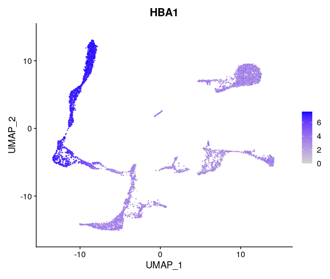
Based on expression of sets of genes you can do a manual cell type annotation. If you know the marker genes for some cell types, you can check whether they are up-regulated in one or the other cluster. Here we have some marker genes for two different cell types:
tcell_genes <- c("IL7R", "LTB", "TRAC", "CD3D")
monocyte_genes <- c("CD14", "CST3", "CD68", "CTSS")
Let’s have a look at the expression of the four T cell genes:
Seurat::FeaturePlot(seu_int, tcell_genes, ncol=2)
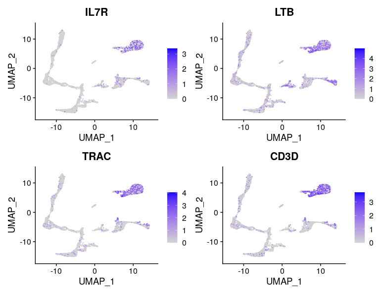
These cells are almost all in cluster 0 and 8. Which becomes clearer when looking at the violin plot:
Seurat::VlnPlot(seu_int,
features = tcell_genes,
ncol = 2)
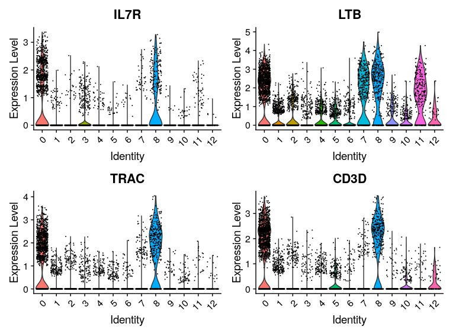
Exercise: Have a look at the monocyte genes as well. Which clusters contain probably monocytes?
Answer
Running
Seurat::FeaturePlot(seu_int, monocyte_genes, ncol=2)
Returns:
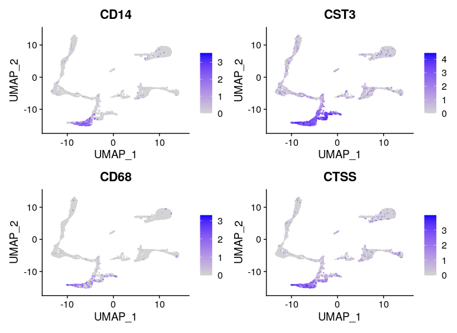
Corresponding mainly to cluster 2 and 9:
Seurat::VlnPlot(seu_int,
features = monocyte_genes,
ncol = 2)
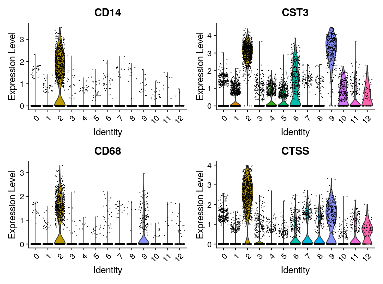
We can also automate this with the function AddModuleScore. For each cell, an expression score for a group of genes is calcuated:
seu_int <- Seurat::AddModuleScore(seu_int,
features = list(tcell_genes),
name = "tcell_genes")
Exercise: After running AddModuleScore, a column was added to seu_int@meta.data.
A. What is the name of that column? What kind of data is in there?
B. Generate a UMAP with color accoding to this column and a violinplot grouped by cluster. Is this according to what we saw in the previous exercise?
Answer
A. The new column is called tcell_genes1. It contains the module score for each cell (which is basically the average expression of the set of genes).
B. You can plot the UMAP with
Seurat::FeaturePlot(seu_int, "tcell_genes1")
Returning:
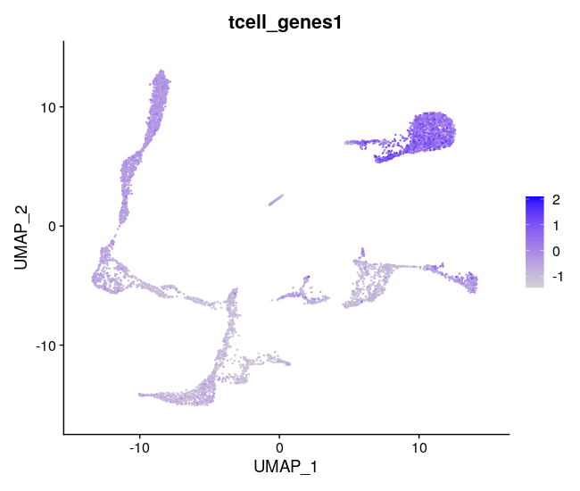
Seurat::VlnPlot(seu_int,
"tcell_genes1")
Which indeed shows these genes are mainly expressed in clusters 0 and 8:
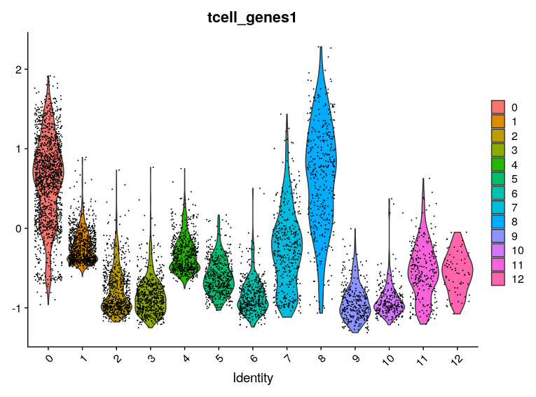
Annotating cells according to cycling phase
Based on the same principle, we can also annotate cell cycling state. The function CellCycleScore uses AddModuleScore to get a score for the G2/M and S phase (the mitotic phases in which cell is cycling). In addition, CellCycleScore assigns each cell to either the G2/M, S or G1 phase.
First we extract the built-in genes for cell cycling:
s.genes <- Seurat::cc.genes.updated.2019$s.genes
g2m.genes <- Seurat::cc.genes.updated.2019$g2m.genes
Now we run the function:
seu_int <- Seurat::CellCycleScoring(seu_int,
s.features = s.genes,
g2m.features = g2m.genes)
And we can visualize the annotations:
Seurat::DimPlot(seu_int, group.by = "Phase")
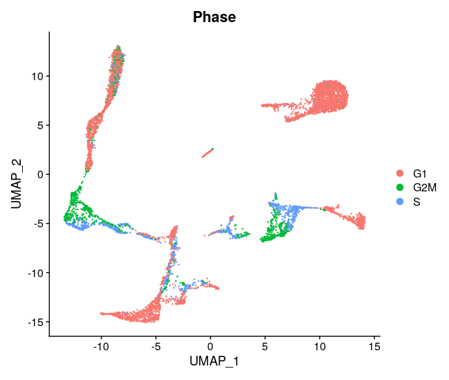
Based on your application, you can try to regress out the cell cycling scores at the step of scaling. Reasons for doing that could be:
- Merging cycling and non-cycling cells of the same type in one cluster
- Merging G2/M and S phase in one cluster
Note
Note that correcting for cell cycling is performed at the scaling step. It will therefore only influence analyses that use scaled data, like dimensionality reduction and clustering. For e.g. differential gene expression testing, we use the raw original counts (not scaled).
Here, we choose not to regress out either of them. Because we are looking at developing cells, we might be interested to keep cycling cells seperated. In addition, the G2/M and S phases seem to be in the same clusters. More info on correcting for cell cycling here.
Cell type annotation using SingleR
To do a fully automated annoation, we need a reference dataset of primary cells. Any reference could be used. The package scRNAseq in Bioconductor includes several scRNAseq datasets that can be used as reference to SingleR. One could also use a reference made of bulk RNA seq data. Here we are using the a hematopoietic reference dataset from celldex. Check out what’s in there:
ref <- celldex::NovershternHematopoieticData()
class(ref)
table(ref$label.main)
Note
You will be asked whether to create the directory /home/rstudio/.cache/R/ExperimentHub. Type yes as a response.
Note
You can find more information on different reference datasets at the celldex documentation
Now SingleR compares our normalized count data to a reference set, and finds the most probable annation:
seu_int_SingleR <- SingleR::SingleR(test = Seurat::GetAssayData(seu_int, slot = "data"),
ref = ref,
labels = ref$label.main)
See what’s in there by using head:
head(seu_int_SingleR)
Visualize singleR score quality scores:
SingleR::plotScoreHeatmap(seu_int_SingleR)
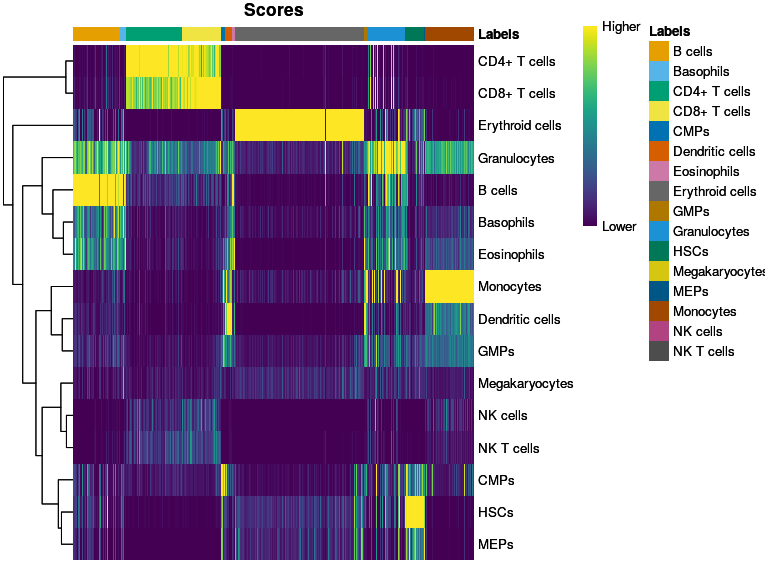
SingleR::plotDeltaDistribution(seu_int_SingleR)
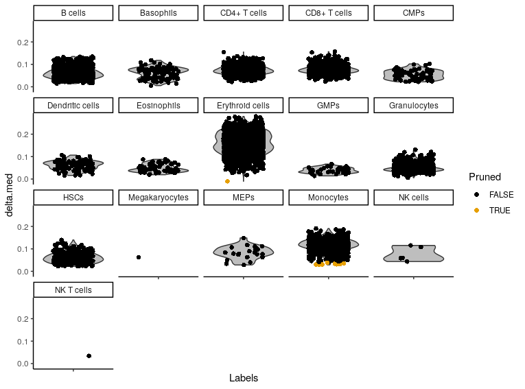
There are some annotations that contain only a few cells. They are usually not of interest, and they clogg our plots. Therefore we remove them from the annotation:
singleR_labels <- seu_int_SingleR$labels
t <- table(singleR_labels)
other <- names(t)[t < 10]
singleR_labels[singleR_labels %in% other] <- "none"
In order to visualize it in our UMAP, we have to add the annotation to seu_int@meta.data:
seu_int$SingleR_annot <- singleR_labels
We can plot the annotations in the UMAP. Here, we use a different package for plotting (dittoSeq) as it has a bit better default coloring, and some other plotting functionality we will use later on.
dittoSeq::dittoDimPlot(seu_int, "SingleR_annot", size = 0.7)
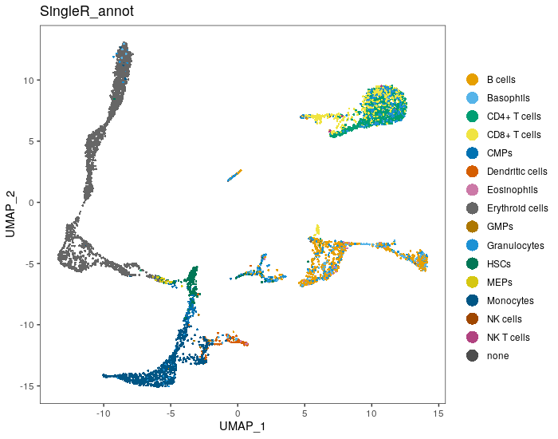
We can check out how many cells per sample we have for each annotated cell type:
dittoSeq::dittoBarPlot(seu_int, var = "SingleR_annot", group.by = "orig.ident")
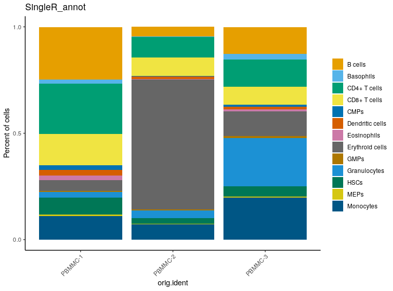
Exercise: Compare our manual annotation (based on the set of T cell genes) to the annotation with SingleR. Do they correspond?
Hint
You can for example use the plotting function dittoBarPlot to visualize the cell types according to cluster (use integrated_snn_res.0.3 in stead of orig.ident))
Answer
We can have a look at the mean module score for each SingleR annotation like this:
dittoSeq::dittoBarPlot(seu_int,
var = "SingleR_annot",
group.by = "integrated_snn_res.0.3")
This returns:
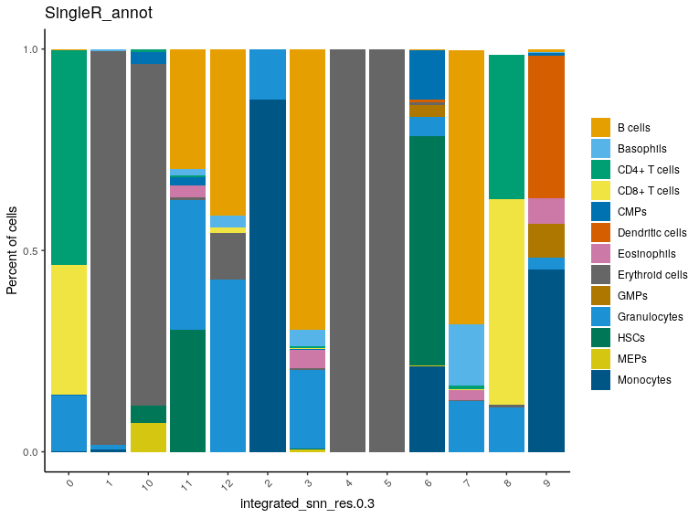
Here, you can see that cluster 0 and 8 contain cells annotated as T cells (CD4+ and CD8+).
Save the dataset and clear environment
Now, save the dataset so you can use it tomorrow:
saveRDS(seu_int, "seu_int_day2_part2.rds")
Clear your environment:
rm(list = ls())
gc()
.rs.restartR()